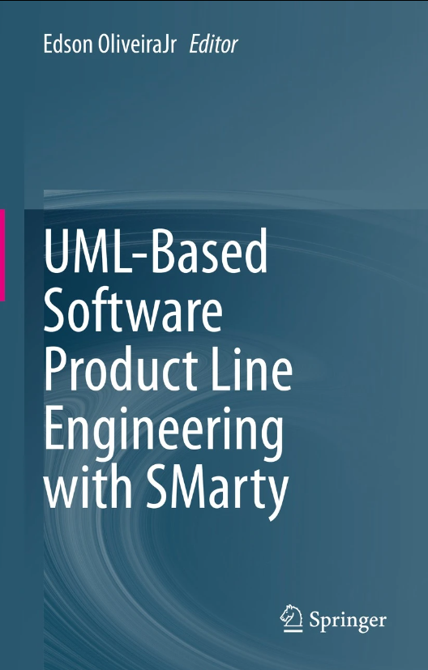

Publications
Last 10 years...
Green access. No cost for publication
Open access. Payment for publication
written in Brazilian Portuguese
 top publications
top publications
Books

 OliveiraJr, E. (Editor)
UML-Based Software Product Line Engineering with SMarty.
Springer.
ISBN/ISSN: 978-3-031-18556-4.
2023.
OliveiraJr, E. (Editor)
UML-Based Software Product Line Engineering with SMarty.
Springer.
ISBN/ISSN: 978-3-031-18556-4.
2023.
OliveiraJr, E.; Noel, A. A. Programação I - Java para Graduação EAD. UniCesumar. ISBN/ISSN: 9788545911890. 2018.
OliveiraJr, E.; Noel, A. A. Programação II - Java para Graduação EAD. UniCesumar. ISBN/ISSN: 9788545911906. 2018.
OliveiraJr, E. Programação I (Java). UniCesumar. ISBN/ISSN: 9788580846072. 2013.
OliveiraJr, E. Programação II (Java). UniCesumar. ISBN/ISSN: 9788580846058. 2013.
OliveiraJr, E. Programação Avançada (Java). UniCesumar. ISBN/ISSN: 9788580846515. 2013.
2024
Silva, T. J.; OliveiraJr, E.; Zorzo, A. F.
Review and Recommendations on How Ontologies Have Supported Digital Forensics.
Forensic Science Review.
Poltronieri, I.; Zorzo, A.; Silveria, M. B.; OliveiraJr, E.
Usa-DSL: a Process for Usability Evaluation of Domain-Specific Languages.
Journal of Universal Computer Science.
OliveiraJr, E.; Madeiral, F.; Santos, A. R.; Chavez, C. V. F. G.; Soares, S.
On the Open Science-based Evolution of Software Engineering Research and Practice.
Foundations of Software Engineering (FSE).
Deconto, G. D.; Zorzo, A.; Dalalana, D. B.; OliveiraJr, E.; Lunardi, R. C.
Machine Learning for Forensic Occupancy Detection in IoT Environments.
World Conference on Information Systems and Technologies (WorldCist).
Santana, C. H.; Camiletti, A. P.; Rand, D. R.; Nascimento, E. S.; OliveiraJr, E.; Amaral, A. M. M. M.
Scratch no Desenvolvimento do Pensamento Computacional: um Quasi-Experimento com Alunos 9º ano.
Workshop sobre Educação em Computação (WEI).
Silva, C. A. E.; Leal, G. C. L.; Balancieri, R.; OliveiraJr, E.
O Ensino de Startups de Software em Cursos da Área de Computação.
Tecnologias, Sociedade e Conhecimento.
2023
Allian, Ana P.; Silva, L. F.; OliveiraJr, E.; Nakagawa, E. Y.
VMTools-RA: a Reference Architecture for Software Variability Tools.
Journal of Universal Computer Science.
Bettin, G.; Herculani, J.; Melo, A.; Andrade, L. C. M.; OliveiraJr, E.
Efficacy, Efficiency and Effectiveness of SMarty-based Software Product Line Inspection Techniques: a Controlled Quasi-Experiment.
International Working Conference on Variability Modelling of Software-Intensive Systems (VaMoS).
Cordeiro, A. F. R.; OliveiraJr, E.; Costa, Y. M. G.
Date Fruit classification using a wide range of classifiers.
International Conference on Systems, Signals and Image Processing (IWSSIP).
Luz, C.; OliveiraJr, E.; Steinmacher, I.
A Conceptual Model to Support Teaching of Software Engineering Controlled (Quasi-)Experiments.
Brazilian Symposium on Software Engineering (SBES).
Santana, F. A.; Cordeiro, A. F. R.; OliveiraJr, E.
Use of the Dublin Core Standard to Express Open Metadata Related to Software Engineering Experiments.
Workshop on Open Science Practices in Software Engineering (OpenScienSE).
Santos, A.; Kuspil, J.; Rando, D.; Santos, D.; Leal, G. C.; Balancieri, R.; OliveiraJr, E.
Technical Debt in Brazilian Software Startups: Perceptions of Professionals in Paraná.
Brazilian Symposium on Software Quality (SBQS).
Santana, F. A.; Cordeiro, A. F. R.; OliveiraJr, E.
Dublin Core for Recording Metadata of Experiments in Software Engineering: A Survey.
Regional School on Software Engineering (ERES).
Santana, F. A.; Cordeiro, A. F. R.; OliveiraJr, E.
Metadata Standards: a Review Towards Modeling Experiments.
Regional School on Software Engineering (ERES).
Ferrari, G. N.; Nepomuceno, T.; Santana, C. H.; Luz, C. D.; Leal, G. C. L.; Amaral, A. M. M. M.; Balancieri, R.
Advanced Undergraduate Computing Students' Perception of Software Quality Teaching: a Survey in the Brazilian Paraná State.
Ibero-American Conference on Software Engineering (CIbSE).
Pereira, M. A.; Tenório, N.; OliveiraJr, E.
Projeto e Desenvolvimento de um Software de Apoio à Revisão Aberta por Pares.
Escola Regional de Engenharia de Software (ERES).
Chagas, P. C.; Luz, C. D.; OliveiraJr, E.
Adoção de Domain-Driven Design para o Domínio de Pagamentos.
Escola Regional de Engenharia de Software (ERES).
Garcia, L. A.; Morandini, M.; OliveiraJr, E.
Uma Proposta para Automatização de Avaliação de Usabilidade/UX.
Escola Regional de Engenharia de Software (ERES).
Guelman, I.; OliveiraJr, E.; Xavier, L.
Ensino, Aprendizagem e Uso Profissional da UML em Belo Horizonte e Região.
Simpósio Brasileiro de Educação em Computação (Educomp).
2022
OliveiraJr, E.; Silva, T. J.; Zorzo, A.; Neu, C. V.
Digital Forensics Experimentation: Analysis and Recommendations.
Forensic Science Review.
Garcia, L. A.; OliveiraJr, E.; Morandini, M.
Tailoring the Scrum framework for software development: Literature mapping and feature-based support.
Information and Software Technology.
Falvo, V.; Marcolino, A. S.; Duarte Filho, N. F.; OliveiraJr, E.; Barbosa, E. F.
Development and Evaluation of a Software Product Line for M-Learning Applications.
Journal of Universal Computer Society.
Luz, C. D.; OliveiraJr, E.; Steinmacher, I. F.
How Experimentation in Software Engineering has been taught? Survey and Research Agenda.
International Conference on Evaluation and Assessment in Software Engineering (EASE).
Cordeiro, A. F. R.; OliveiraJr, E.; Capretz, L. F.
Towards an Open Science-Based Framework for Software Engineering Controlled (Quasi-)Experiments.
Brazilian eScience Workshop (BRESCI).
Silva, T. J.; OliveiraJr, E.
An Ontology for Supporting Digital Forensics Controlled Experiments: Early Stages of Development.
Brazilian eScience Workshop (BRESCI).
OliveiraJr, E.; Cordeiro, A.; Nascimento, D.
Surveying the Open Science Knowledge in a Southern Brazilian University.
International Symposium on Open Collaboration (OpenSym).
Felizardo, K.; Flach, C.; Pereira, R.; OliveiraJr, E.
Surveying the Audience Effect in Open Peer Review of a Software Engineering Workshop.
Brazilian Symposium on Software Engineering (SBES).
Silva, L. F.; OliveiraJr, E.; Santos, R. P.
A Field Study on Reference Architectural Decisions for Developing a UML-based Software Product Line Tool.
Brazilian Symposium on Software Components, Architectures, and Reuse (SBCARS).
Soares, M. H. A.; OliveiraJr, E.; Tenório, N.
Engenharia de Requisitos em Empresas da Região Sul do Brasil: um Survey.
Escola Regional de Engenharia de Software (ERES).
Bettin, G.; Herculani, J. B.; Shigenaga, M. Y.; Leal, G. C. L.; Balancieri, R.; OliveiraJr, E.; Colanzi, T. E.; Amaral, A. M. M. M.
O Ensino de Qualidade de Software nas IES Públicas do Paraná: um Estudo Exploratório.
Workshop sobre Educação em Computação (WEI).
2021
Morandini, M.; Coleti, T. A.; OliveiraJr, E.; Corrêa, P. L. P.
Considerations about the efficiency and sufficiency of the utilization of the Scrum methodology: A survey for analyzing results for development teams.
Computer Science Review.
OliveiraJr, E.; Zorzo, A.; Neu, C. V.
Experimentation of digital multimedia forensics: State of the art and research gaps.
WIREs. Forensic science.
Silva, L. F.; OliveiraJr, E.
SMartyModeling: an Environment for Engineering UML-based Software Product Lines.
International Working Conference on Variability Modelling of Software-Intensive Systems (VaMoS).
Choma Neto, J.; Bento, L. H. T. C.; OliveiraJr, E.; Souza, S. R. S.
Are we teaching UML according to what IT companies need? A survey on the São Carlos-SP region.
Simpósio Brasileiro de Educação em Computação (Educomp).
Nepomuceno, T.; OliveiraJr, E.
Software Product Line Traceability and Product Configuration in Class and Sequence Diagrams: an Empirical Study.
International Conference on Enterprise Information Systems (ICEIS).
Petry, K. L.; OliveiraJr, E.; Costa, L. T.; Zanin, A.; Zorzo, A.
SMartyTesting: a Model-Based Testing Approach for Deriving Software Product Line Test Sequences.
International Conference on Enterprise Information Systems (ICEIS).
Bettin, G.; OliveiraJr, E.
SMartyPerspective: a perspective-based inspection technique for software product lines.
Brazilian Symposium on Software Engineering (SBES).
OliveiraJr, E.; Furtado, V.; Vignando, H.; Luz, C.; Cordeiro, A.; Steinmacher, I.; Zorzo, A.
Towards Improving Experimentation in Software Engineering.
Brazilian Symposium on Software Engineering (SBES).
OliveiraJr, E.; Flach, C.; Cordeiro, A. F. R.; Feitosa, D.
How do Brazilian Software Engineering Researchers Perceive and Practice Open Science?.
Workshop on Open Science Practices for Software Engineering (OpenScienSE).
Cordeiro, A. F. R.; OliveiraJr, E.
Open Science Practices for Software Engineering Controlled Experiments and Quasi-Experiments.
Workshop on Open Science Practices for Software Engineering (OpenScienSE).
Furtado, V.; OliveiraJr, E.; Kalinowski, M.
Guidelines for Promoting Software Product Line Experiments.
Brazilian Symposium on Software Components, Architectures, and Reuse (SBCARS).
Freire, W.; Tonhão, S.; Bonetti, T.; Shigenaga, M.; Cadette, W.; Felizardo, F.; Amaral, A.; OliveiraJr, E.; Colanzi, T.
On the configuration of multi-objective evolutionary algorithms for PLA design optimization.
Brazilian Symposium on Software Components, Architectures, and Reuse (SBCARS).
Silva, L. F.; OliveiraJr, E.
SMartyModeling: an instance of VMTools-RA for Engineering UML-based Software Product Lines.
Brazilian Symposium on Software Quality (SBQS).
Costa, P. H. M.; Cordeiro, A. F. R.; OliveiraJr, E.
Comparing Open Data Repositories.
Regional School of Software Engineering (ERES).
OliveiraJr, E.; Colanzi, T. E.; Amaral, A.; Cordeiro, A. F. R.; Choma Neto, J.; Souza, S. R. S.
Ensino, Aprendizagem e Uso Profissional da UML em Maringá e Região.
Workshop sobre Educação em Computação (WEI).
2020
Petry, K. L.; OliveiraJr, E.; Zorzo, A.
Model-based testing of software product lines: Mapping study and research roadmap.
The Journal of Systems and Software.
OliveiraJr, E.; Zorzo, A.; Neu, C. V.
Towards a conceptual model for promoting digital forensics experiments.
Forensic Science International: Digital Investigation.
Allian, A. P.; OliveiraJr, E.; Capilla, R.; Nakagawa, E. Y.
Have Variability Tools Fulfilled the Needs of the Software Industry?.
Journal of Universal Computer Science.
Nepomuceno, T. S.; OliveiraJr, E.; Penteado, R. R. M.; Silva, M. A. G.; Zorzo, A.
Empirical Study on Product Configuration and Traceability in UML-based Product-Lines.
Ibero-American Conference on Software Engineering (CIbSE).
Vignando, H.; Furtado, V.; Teixeira, L.; OliveiraJr, E.
OntoExper-SPL: An Ontology for Software Product Line Experiments.
International Conference on Enterprise Information Systems (ICEIS).
Garcia, L.; OliveiraJr, E.; Leal, G,; Morandini, M.
On the Adaptations of the Scrum Framework Software Development Events: Literature and Practitioners Analysis using Feature Models.
International Conference on Enterprise Information Systems (ICEIS).
Silva, L.; OliveiraJr, E.; Zorzo, A.
Feasibility Analysis of SMartyModeling for Modeling UML-based Software Product Lines.
International Conference on Enterprise Information Systems (ICEIS).
Nepomuceno, T.; OliveiraJr, E.; Geraldi, R.; Malucelli, A.; Reinehr, S.; Silva, M. A. G.
Software Product Line Configuration and Traceability: An Empirical Study on SMarty Class and Component Diagrams.
Annual Computers, Software, and Applications Conference (COMPSAC).
OliveiraJr, E.; Leal, G.; Valente, M. T.; Morandini, M.; Prikladinicki, R.; Pompermaier, L.; Chanin, R.; Caldeira, C.; Machado, L.; Souza, C.
Surveying the impacts of COVID-19 on the perceived productivity of Brazilian software developers.
Brazilian Symposium on Software Engineering (SBES).
Garcia, L. A.; OliveiraJr, E.; Leal, G. C. L.; Morandini, M.; Urbanowski, S.
Adaptations of Scrum roles in software projects.
Brazilian Symposium on Software Engineering (SBES).
Silva, L. F.; OliveiraJr, E.
Evaluating usefulness, ease of use and usability of an UML-based Software Product Line Tool.
Brazilian Symposium on Software Engineering (SBES).
Luz, C. D.; OliveiraJr, E.; Steinmacher, I.
Uma Ontologia de Apoio ao Ensino de Experimentação em Engenharia de Software.
Congresso Brasileiro de Software: Teoria e Prática (CBSoft).
Silva, L. F.; Fernandes, B.; OliveiraJr, E.
Evolução do Ambiente SMartyModeling por meio de Testes Exploratórios.
Escola Regional de Engenharia de Software (ERES).
Garcia, L. A.; OliveiraJr, E.; Leal, G. C. L.; Morandini, M.
A Unified Feature Model for Scrum Artifacts from a Literature and Practice Perspective.
Escola Regional de Engenharia de Software (ERES).
Silva, L. F.; OliveiraJr, E.
Modeling and Configuring UML-based Software Product Lines with SMartyModeling.
Escola Regional de Engenharia de Software (ERES).
2019
Teixeira, E. N.; Aleixo, F. A.; Amâncio, F. D. S.; OliveiraJr, E.; Kulesza, U.; Werner, C.
Software process line as an approach to support software process reuse: A systematic literature review.
Information and Software Technology.
Furtado, V. R.; Vignando, H.; Franca, V.; OliveiraJr, E.
Comparing Approaches for Quality Evaluation of Software Engineering Experiments: an Empirical Study Using Software Product Line Experiments.
Journal of Computer Science.
2018
Giron, A.; Gimenes, I. M. S.; OliveiraJr, E.
Evaluation of Test Case Generation based on a Software Product Line for Model Transformation.
Journal of Computer Science.
Cordeiro, A. F. R.; OliveiraJr, E.
Size, Coupling and Cohesion Metrics for Product-Line Architecture Evaluation: Proposal and Experimental Validation.
Journal of Computer Science.
Pazin, M. G.; Allian, A. P.; OliveiraJr, E.
Empirical study on software process variability modelling with SMartySPEM and vSPEM.
IET Software.
Nepomuceno, T. S.; OliveiraJr, E.
Configuring Software Product Line Specific Products with SMarty and PLUS.
Brazilian Symposium on Software Quality (SBQS).
Bettin, G. C. S.; Geraldi, R. T.; OliveiraJr, E.
Experimental Evaluation of the SMartyCheck Techinique for Inspecting Defects in UML Component Diagrams.
Brazilian Symposium on Software Quality (SBQS).
Pazin, M. G.; Geraldi, R. T.; OliveiraJr, E.
Comparing SMartySPEM and vSPEM for Modeling Variability in Software Processes.
Brazilian Symposium on Software Quality (SBQS).
2017
Marcolino, A. S.; OliveiraJr, E.; Gimnenes, I. M.S.; Barbosa, E. F.
Variability Resolution and Product Configuration with SMarty: An Experimental Study on UML Class Diagrams.
Journal of Universal Computer Science.
Geraldi, R. T.; OliveiraJr, E.
Defect Types and Software Inspection Techniques: A Systematic Mapping Study.
Journal of Computer Science.
Marcolino, A.; OliveiraJr, E.
Comparing SMarty and PLUS for Variability Identification and Representation at Product-Line UML Class Level: A Controlled Quasi-Experiment.
Journal of Computer Science.
Santos, M. C. B.; Colanzi, T. E.; Amaral, A. M. M. M.; OliveiraJr, E.
Preliminary study on the correlation of objective functions to optimize product-line architectures.
Brazilian Symposium on Software Components, Architectures, and Reuse (SBCARS).
Cordeiro, A. F. R.; OliveiraJr, E. SystEM-Env: um Ambiente para Avaliação de Linhas de Produto de Software baseadas em UML. Revista Eletrônica de Iniciação Científica.
2016
Dias, J. W.; OliveiraJr, E.
Modeling Variability in Software Process with EPF Composer and SMartySPEM: An Empirical Qualitative Study.
International Conference on Enterprise Information Systems (ICEIS).
Duarte, E. F.; Nanni, L. P.; Geraldi, R. T.; OliveiraJr, E.; Feltrim, V. D.; Pereira, R.
Ordering Matters: An Experimental Study of Ranking Influence on Results Selection Behavior during Exploratory Search.
International Conference on Enterprise Information Systems (ICEIS).
Dias, J. W.; OliveiraJr, E.; Silva, M. A. G.
Preliminary Empirical Evidence on SPrL Variability Management with EPF and SMartySPEM.
Brazilian Symposium on Software Engineering (SBES).
2015
Geraldi, R. T.; Conte, T.; Steinmacher, I.; OliveiraJr, E.
Checklist-based Inspection of SMarty Variability Models - Proposal and Empirical Feasibility Study.
International Conference on Enterprise Information Systems (ICEIS).
Bera, M. H. G.; OliveiraJr, E.; Colanzi, T. E.
Evidence-based SMarty Support for Variability Identification and Representation in Component Models.
International Conference on Enterprise Information Systems (ICEIS).
Melo, M.; OliveiraJr, E.; Soares, M. S.; França, J. M. S.
A Model-driven Approach to Transform SysML Internal Block Diagrams to UML Activity Diagrams.
International Conference on Enterprise Information Systems (ICEIS).
Duarte, E. F.; OliveiraJr, E.; Cogo, F. R.; Pereira, R. Dico: A Conceptual Model to Support the Design and Evaluation of Advanced Search Features for Exploratory Search. International Conference on Human-Computer Interaction (INTERACT).
OliveiraJr, E.; Allian, A. P.
Do Reference Architectures can Contribute to Standardizing Variability Management Tools?.
International Workshop on Exploring Component-based Techniques for Constructing Reference Architectures (CobRA).
Chiquitto, A. G.; Gimenes, I. M.S.; OliveiraJr, E.
SyMPLES-CVL: A SysML and CVL Based Approach for Product-Line Development of Embedded Systems.
Brazilian Symposium on Components, Architectures and Reuse Software (SBCARS).
Toledo, D. F.; Pereira, R.; OliveiraJr, E. Identifying Cognitive Authority in Social Networks: a Conceptual Framework. Simpósio Brasileiro sobre Fatores Humanos em Sistemas Computacionais.